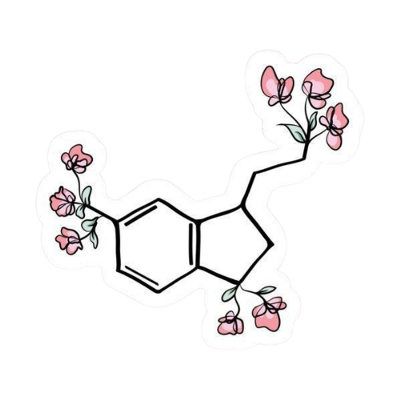

O Que é o Anel de Benzeno?
O anel de benzeno é uma estrutura química fundamental em organometálicos e compostos aromáticos. Ele consiste em um anel de seis átomos de carbono, cada um ligado a um átomo de hidrogênio. A estrutura do anel de benzeno é caracterizada por ligações alternadas entre ligações simples e ligações duplas, resultando em uma distribuição simétrica de elétrons pi sobre o anel.